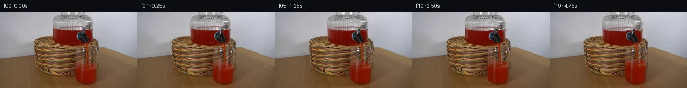

![首帧]()

Round 00
2026-11-05T02:19:46.070371+00:00像素候选变化代码 +173/−0inspection 更新
pixels 80021e34f9728dd6 · code 450d75c33083583e
查看本轮 generate.py 真实 diff
--- previous/generate.py
+++ current/generate.py
@@ -0,0 +1,173 @@
+"""Deterministic RGB continuation using source-pixel warps and liquid shading.
+No external assets, models, render engines, or image-reading tools are used.
+"""
+from pathlib import Path
+import json
+import numpy as np
+from PIL import Image, ImageDraw
+from artifact_io import save
+
+ROOT = Path(__file__).resolve().parent
+W, H, N = 256, 144, 20
+SOURCE = np.asarray(Image.open(ROOT / 'first_frame.png').convert('RGB'))
+BASE = SOURCE.astype(np.float64)
+Y, X = np.mgrid[:H, :W].astype(np.float64)
+
+
+def smooth(a, b, v):
+ q = np.clip((v - a) / (b - a), 0., 1.)
+ return q*q*(3.-2.*q)
+
+
+def sample(array, x, y):
+ x = np.clip(x, 0., W-1.)
+ y = np.clip(y, 0., H-1.)
+ x0 = np.floor(x).astype(int)
+ y0 = np.floor(y).astype(int)
+ x1, y1 = np.minimum(x0+1, W-1), np.minimum(y0+1, H-1)
+ u, v = (x-x0)[..., None], (y-y0)[..., None]
+ return ((1-u)*(1-v)*array[y0, x0] + u*(1-v)*array[y0, x1]
+ + (1-u)*v*array[y1, x0] + u*v*array[y1, x1])
+
+
+def blend(a, b, m):
+ return a*(1.-m[..., None]) + b*m[..., None]
+
+
+# Keep the dispenser's edges, spigot and its metallic mount stationary.
+jar_mask = smooth(99.2, 101.3, X)*(1.-smooth(170., 172., X))
+jar_mask *= smooth(25.5, 28.0, Y)*(1.-smooth(41.5, 45., Y))
+valve = smooth(141., 144., X)*(1.-smooth(163.5, 166., X))*smooth(29., 32., Y)
+jar_mask *= 1.-valve
+
+# The receiving glass's vertical walls and bottom are fixed. Only its interior
+# surface texture is deformed, preserving the source's vertical reflections.
+glass_mask = smooth(139.0, 141.2, X)*(1.-smooth(177.8, 179.7, X))
+glass_mask *= smooth(89.0, 92., Y)*(1.-smooth(130., 133., Y))
+reflection = .22*np.exp(-((X-153.1)/1.0)**2)
+glass_mask *= 1.-reflection
+
+# The existing jet has this measured centre line. A local horizontal warp moves
+# its pixels subpixel distances while leaving the outlet fixed. No background
+# replacement is necessary for this small, attached-jet displacement.
+jet_center = 161.45 + .046*np.clip(Y-63., 0., 35.)
+jet_support = np.exp(-((X-jet_center)/2.35)**4)
+jet_support *= smooth(60.0, 63.5, Y)*(1.-smooth(98., 102., Y))
+jet_core = np.exp(-((X-jet_center)/1.50)**4)
+
+
+def frame(i):
+ if i == 0:
+ return SOURCE.copy()
+ t = i/4.
+ rise = 6.*i/19.
+ drop = rise*(40./72.)**2
+ onset = smooth(0., .60, t)
+
+ # Larger reservoir recedes by the projected vessel area ratio.
+ jar_wave = .10*onset*(np.sin(.22*X - 2.2*t)-np.sin(.22*X))
+ jar_wave *= np.exp(-((Y-(35.+drop))/3.2)**2)
+ jar_y = Y-drop-jar_wave
+ out = blend(BASE, sample(BASE, X, jar_y), jar_mask)
+
+ # The liquid transition rises, deforming its photographic texture smoothly
+ # into the stationary lower body. Impact waves are under half a pixel.
+ taper = 1.-smooth(109., 132., Y)
+ liquid_surface = 100.-rise
+ distance = np.sqrt(((X-163.)/1.8)**2 + ((Y-liquid_surface)/.75)**2 + .02)
+ ripple = .20*onset*(np.sin(.86*distance-7.5*t)-np.sin(.86*distance))
+ ripple *= np.exp(-((Y-liquid_surface)/5.0)**2)*np.exp(-((X-162.)/20.)**2)
+ glass_y = Y+rise*taper+ripple
+ filling = sample(BASE, X, glass_y)
+ out = blend(out, filling, glass_mask)
+
+ # Continue the narrow gravity-driven jet; amplitude grows gently downstream.
+ jet_end = 100.-rise
+ attachment = smooth(61., 74., Y)
+ jet_dx = .29*onset*attachment*(np.sin(.18*(Y-62.)-5.4*t)-np.sin(.18*(Y-62.)))
… diff truncated; 86 more lines …